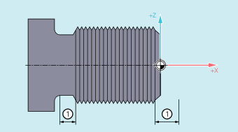

The run-in and run-out path of the thread can be specified in the part program with the DITS and DITE addresses.
The thread axis is accelerated or braked along the specified path.
① | Run-in/run-out path, depending on the machining direction |
Due to the collar on the thread runin, little room is left for the tool start ramp.
This must therefore be specified shorter via DITS.
Because of the shoulder at the thread run-out, there is not much room for the tool braking ramp, introducing a risk of collision between the workpiece and the tool cutting edge. The deceleration ramp can be specified shorter using DITE. Due to the inertia of the mechanical system, however, a collision can still occur.
Remedy: Program a shorter thread, reduce the spindle speed.
| Note |
|
The programmed run-in and run-out path only increases the rate of acceleration on the path. If one of the two paths is set larger than the thread axis needs with active acceleration, the thread axis is accelerated or decelerated with maximum acceleration.
| Define thread run-in path |
| Define thread run-out path |
| Only paths, and not positions, are programmed with The programmed run-in/run-out path is handled according to the current dimension setting (inches, metric). |
| Program code | Comment |
|---|---|
| ... | |
| N40 G90 G0 Z100 X10 SOFT M3 S500 | |
| N50 G33 Z50 K5 SF=180 DITS=1 DITE=3 | ; Start of smoothing with Z=53. |
| N60 G0 X20 |